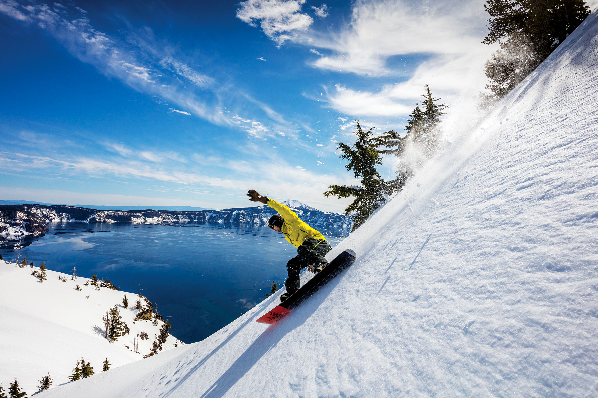

How to Snowboard

Here are some of the basics:
- Step 1: Getting a Board That Works for You , and Rules of the SlopeGet a board you feel comfertable with. I suggest you rent a board for first time. Take a lesson from a paid teacher on the hill for your first time to add to the experience.
Also, no matter what, you will fall ! Do not try to learn too fast, you do not want to hurt someone on accident. There are key things you have to know before the first trip down the slopes.
- Step 2: Always Stay in Control This will come over time with carving. Carving is when you turn, or shift your weight on your toes or heel so that the board will let you go right or left.
Sometimes you will "catch an edge" where you will fall quickly because the boards edge. This is hard to avoid and it is best to know it will probably happen your first few times. There are ways to avoid it though. Keep your weight on your forward foot (except in deep powder). Second, never ride the board flat. You will always ride on your uphill edge. If this is your front (toe side) edge, you will always feel as though you are on tip toe just a bit. If it is your back (heel side) edge, you will always feel as though you're curling your toes up. Third always keep your knees bent - even on the flats. Unlike with skiing where you can stand up straight, sit back and flatten out your skis when you get to the flat parts, this is bad news on a board. Keep your knees bent, your weight forward and keep riding on the uphill edge.
- Step 3: The Dreadful Getting Off the Chair LiftWhen you're sitting on a chair lift, your board is perpendicular to the direction you want it to be to dismount. When you approach the dismount point, twist sideways in your seat so that the foot that's still in the board is facing forward. Once the board touches the ground, hold onto the chair with one hand, stand up on the foot that's connected to the board and place your loose foot on the board just in front of the binding into which it goes. Center yourself over the board and release the chair. If your instructor, doesn't tell you these things ask him or her about them. Just a few simple tricks can make your boarding experience much more enjoyable.
- Step 4: Clothing and SafetySince you aren't holding onto poles, you will tend to put your hands in the snow more than when skiing. Water resistant gloves or gloves which have a rubberized inner surface are better. Also, longer boarder's gloves are better than shorter skier's gloves since they tend to keep the snow out of the gap between the jacket and the gloves. When you are just starting, this is not terribly important so it doesn't warrant you buying new gloves just yet.
Wear a head band or a hat (baseball caps don't count). If you catch your rear edge you can fall backwards and will sometimes hit your head. The hat provides extra padding. Though the best thing to do is to wear a helmet. And certainly if you are going to continue in the sport after your first lesson, that should be one of your first purchases!
Some people have also suggested wearing wrist guards like you use when rollerblading and something extra to pad the tail bone. I've never tried it, though.
- Step 7: Go Out Snowboarding Now I hope this instructable has helped, and I want to edit and add more and more to this as long as it helps beginners.
Also, if there is a need or want for a skateboarding instructable I am willing to do so , let me know!
I hope this helps, and as you already know, learning from life experiences is the best way to learn! Go out there this weekend, buy a lift ticket, be a ski bum, get a goggle tan, taste mountain snow, shread the knar, jib the rainbow, and whatever else fancies your mind into stepping onto the board, I am happy you are!